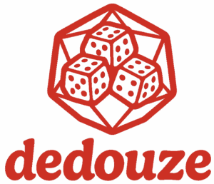

Règles de base
Découvrez comment utiliser votre dé à 12 faces pour terrasser vos adversaires. Une description complète des mécaniques principales.
Lire
Un jeu d'adresse et de chance inspiré de la pétanque
Comment ça se joue la dédouze?.
Découvrez comment utiliser votre dé à 12 faces pour terrasser vos adversaires. Une description complète des mécaniques principales.
LireGuerrier, Mage ou Voleur : comment votre dé influence leurs compétences uniques. Chaque face compte !
VoirAjoutez de nouvelles cartes et des dés spéciaux pour pimenter vos parties de jeu.
InfoPas d'amis sous la main ? Découvrez les règles officielles pour jouer seul contre le plateau.
LireRejoignez notre Discord pour trouver d'autres joueurs et partager vos scénarios personnalisés.
DécouvrirToutes les dates des championnats régionaux et les récompenses exclusives à gagner.
InfoDevenez un pro du calcul des probabilités de vos lancers.
VoirDécouvrez la qualité de fabrication de nos résines de dés.
LireUne question sur un point de règle précis ? La réponse est sûrement ici.
DécouvrirL'histoire de la création du jeu, des premiers croquis à la boîte finale.
Fin